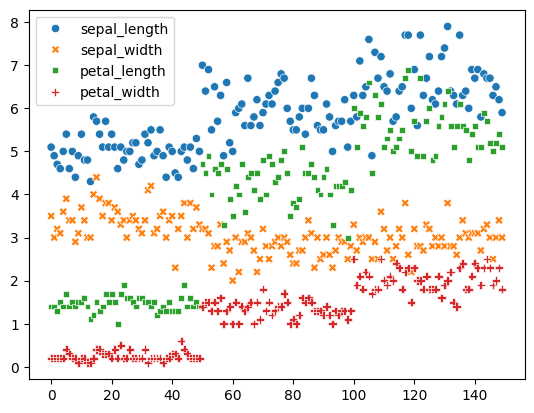

! pip install seaborn
import seaborn as sns
iris = sns.load_dataset("iris")
iris.head()
sns.scatterplot(iris)Collecting seaborn
Downloading seaborn-0.13.2-py3-none-any.whl.metadata (5.4 kB)
Collecting numpy!=1.24.0,>=1.20 (from seaborn)
Downloading numpy-2.0.0-cp310-cp310-manylinux_2_17_x86_64.manylinux2014_x86_64.whl.metadata (60 kB)
━━━━━━━━━━━━━━━━━━━━━━━━━━━━━━━━━━━━━━━━ 0.0/60.9 kB ? eta -:--:-- ━━━━━━━━━━━━━━━━━━━╸━━━━━━━━━━━━━━━━━━━ 30.7/60.9 kB 885.8 kB/s eta 0:00:01 ━━━━━━━━━━━━━━━━━━━╸━━━━━━━━━━━━━━━━━━━ 30.7/60.9 kB 885.8 kB/s eta 0:00:01 ━━━━━━━━━━━━━━━━━━━╸━━━━━━━━━━━━━━━━━━━ 30.7/60.9 kB 885.8 kB/s eta 0:00:01 ━━━━━━━━━━━━━━━━━━━╸━━━━━━━━━━━━━━━━━━━ 30.7/60.9 kB 885.8 kB/s eta 0:00:01 ━━━━━━━━━━━━━━━━━━━━━━━━━━╺━━━━━━━━━━━━ 41.0/60.9 kB 157.3 kB/s eta 0:00:01 ━━━━━━━━━━━━━━━━━━━━━━━━━━╺━━━━━━━━━━━━ 41.0/60.9 kB 157.3 kB/s eta 0:00:01 ━━━━━━━━━━━━━━━━━━━━━━━━━━━━━━━━╸━━━━━━ 51.2/60.9 kB 132.0 kB/s eta 0:00:01 ━━━━━━━━━━━━━━━━━━━━━━━━━━━━━━━━━━━━━━━ 60.9/60.9 kB 143.0 kB/s eta 0:00:00
Collecting pandas>=1.2 (from seaborn)
Downloading pandas-2.2.2-cp310-cp310-manylinux_2_17_x86_64.manylinux2014_x86_64.whl.metadata (19 kB)
Collecting matplotlib!=3.6.1,>=3.4 (from seaborn)
Downloading matplotlib-3.9.0-cp310-cp310-manylinux_2_17_x86_64.manylinux2014_x86_64.whl.metadata (11 kB)
Collecting contourpy>=1.0.1 (from matplotlib!=3.6.1,>=3.4->seaborn)
Downloading contourpy-1.2.1-cp310-cp310-manylinux_2_17_x86_64.manylinux2014_x86_64.whl.metadata (5.8 kB)
Collecting cycler>=0.10 (from matplotlib!=3.6.1,>=3.4->seaborn)
Downloading cycler-0.12.1-py3-none-any.whl.metadata (3.8 kB)
Collecting fonttools>=4.22.0 (from matplotlib!=3.6.1,>=3.4->seaborn)
Downloading fonttools-4.53.0-cp310-cp310-manylinux_2_17_x86_64.manylinux2014_x86_64.whl.metadata (162 kB)
━━━━━━━━━━━━━━━━━━━━━━━━━━━━━━━━━━━━━━━━ 0.0/162.2 kB ? eta -:--:-- ━━━━━━━━━━━━━━━━━━━━━━━━╸━━━━━━━━━━━━━━ 102.4/162.2 kB 3.0 MB/s eta 0:00:01 ━━━━━━━━━━━━━━━━━━━━━━━━━━━━━━━━━━━━━━━ 162.2/162.2 kB 1.9 MB/s eta 0:00:00
Collecting kiwisolver>=1.3.1 (from matplotlib!=3.6.1,>=3.4->seaborn)
Downloading kiwisolver-1.4.5-cp310-cp310-manylinux_2_12_x86_64.manylinux2010_x86_64.whl.metadata (6.4 kB)
Requirement already satisfied: packaging>=20.0 in /home/daniel/miniforge3/lib/python3.10/site-packages (from matplotlib!=3.6.1,>=3.4->seaborn) (24.0)
Collecting pillow>=8 (from matplotlib!=3.6.1,>=3.4->seaborn)
Downloading pillow-10.4.0-cp310-cp310-manylinux_2_28_x86_64.whl.metadata (9.2 kB)
Collecting pyparsing>=2.3.1 (from matplotlib!=3.6.1,>=3.4->seaborn)
Downloading pyparsing-3.1.2-py3-none-any.whl.metadata (5.1 kB)
Requirement already satisfied: python-dateutil>=2.7 in /home/daniel/miniforge3/lib/python3.10/site-packages (from matplotlib!=3.6.1,>=3.4->seaborn) (2.9.0)
Requirement already satisfied: pytz>=2020.1 in /home/daniel/miniforge3/lib/python3.10/site-packages (from pandas>=1.2->seaborn) (2024.1)
Collecting tzdata>=2022.7 (from pandas>=1.2->seaborn)
Downloading tzdata-2024.1-py2.py3-none-any.whl.metadata (1.4 kB)
Requirement already satisfied: six>=1.5 in /home/daniel/miniforge3/lib/python3.10/site-packages (from python-dateutil>=2.7->matplotlib!=3.6.1,>=3.4->seaborn) (1.16.0)
Downloading seaborn-0.13.2-py3-none-any.whl (294 kB)
━━━━━━━━━━━━━━━━━━━━━━━━━━━━━━━━━━━━━━━━ 0.0/294.9 kB ? eta -:--:-- ━━━━━━━━━━━━━━━━╸━━━━━━━━━━━━━━━━━━━━━━━ 122.9/294.9 kB 3.3 MB/s eta 0:00:01 ━━━━━━━━━━━━━━━━━━━━━━━━━━━╸━━━━━━━━━━━━ 204.8/294.9 kB 2.5 MB/s eta 0:00:01 ━━━━━━━━━━━━━━━━━━━━━━━━━━━━━━━━━━━━━━╸━ 286.7/294.9 kB 2.3 MB/s eta 0:00:01 ━━━━━━━━━━━━━━━━━━━━━━━━━━━━━━━━━━━━━━━━ 294.9/294.9 kB 1.8 MB/s eta 0:00:00
Downloading matplotlib-3.9.0-cp310-cp310-manylinux_2_17_x86_64.manylinux2014_x86_64.whl (8.3 MB)
━━━━━━━━━━━━━━━━━━━━━━━━━━━━━━━━━━━━━━━━ 0.0/8.3 MB ? eta -:--:-- ━━━━━━━━━━━━━━━━━━━━━━━━━━━━━━━━━━━━━━━━ 0.1/8.3 MB 3.7 MB/s eta 0:00:03 ╸━━━━━━━━━━━━━━━━━━━━━━━━━━━━━━━━━━━━━━━ 0.1/8.3 MB 1.7 MB/s eta 0:00:05 ╸━━━━━━━━━━━━━━━━━━━━━━━━━━━━━━━━━━━━━━━ 0.1/8.3 MB 1.5 MB/s eta 0:00:06 ╸━━━━━━━━━━━━━━━━━━━━━━━━━━━━━━━━━━━━━━━ 0.2/8.3 MB 1.2 MB/s eta 0:00:08 ━╺━━━━━━━━━━━━━━━━━━━━━━━━━━━━━━━━━━━━━━ 0.2/8.3 MB 940.1 kB/s eta 0:00:09 ━╺━━━━━━━━━━━━━━━━━━━━━━━━━━━━━━━━━━━━━━ 0.3/8.3 MB 980.5 kB/s eta 0:00:09 ━╺━━━━━━━━━━━━━━━━━━━━━━━━━━━━━━━━━━━━━━ 0.3/8.3 MB 980.3 kB/s eta 0:00:09 ━╺━━━━━━━━━━━━━━━━━━━━━━━━━━━━━━━━━━━━━━ 0.3/8.3 MB 980.3 kB/s eta 0:00:09 ━╺━━━━━━━━━━━━━━━━━━━━━━━━━━━━━━━━━━━━━━ 0.3/8.3 MB 980.3 kB/s eta 0:00:09 ━╺━━━━━━━━━━━━━━━━━━━━━━━━━━━━━━━━━━━━━━ 0.3/8.3 MB 980.3 kB/s eta 0:00:09 ━╺━━━━━━━━━━━━━━━━━━━━━━━━━━━━━━━━━━━━━━ 0.3/8.3 MB 980.3 kB/s eta 0:00:09 ━╺━━━━━━━━━━━━━━━━━━━━━━━━━━━━━━━━━━━━━━ 0.3/8.3 MB 980.3 kB/s eta 0:00:09 ━╸━━━━━━━━━━━━━━━━━━━━━━━━━━━━━━━━━━━━━━ 0.3/8.3 MB 511.4 kB/s eta 0:00:16 ━╸━━━━━━━━━━━━━━━━━━━━━━━━━━━━━━━━━━━━━━ 0.3/8.3 MB 512.0 kB/s eta 0:00:16 ━╸━━━━━━━━━━━━━━━━━━━━━━━━━━━━━━━━━━━━━━ 0.4/8.3 MB 532.1 kB/s eta 0:00:15 ━━╺━━━━━━━━━━━━━━━━━━━━━━━━━━━━━━━━━━━━━ 0.4/8.3 MB 561.7 kB/s eta 0:00:15 ━━╸━━━━━━━━━━━━━━━━━━━━━━━━━━━━━━━━━━━━━ 0.6/8.3 MB 658.0 kB/s eta 0:00:12 ━━━╺━━━━━━━━━━━━━━━━━━━━━━━━━━━━━━━━━━━━ 0.7/8.3 MB 739.9 kB/s eta 0:00:11 ━━━╸━━━━━━━━━━━━━━━━━━━━━━━━━━━━━━━━━━━━ 0.7/8.3 MB 736.6 kB/s eta 0:00:11 ━━━╸━━━━━━━━━━━━━━━━━━━━━━━━━━━━━━━━━━━━ 0.7/8.3 MB 736.6 kB/s eta 0:00:11 ━━━╸━━━━━━━━━━━━━━━━━━━━━━━━━━━━━━━━━━━━ 0.7/8.3 MB 672.9 kB/s eta 0:00:12 ━━━╸━━━━━━━━━━━━━━━━━━━━━━━━━━━━━━━━━━━━ 0.7/8.3 MB 672.9 kB/s eta 0:00:12 ━━━╸━━━━━━━━━━━━━━━━━━━━━━━━━━━━━━━━━━━━ 0.7/8.3 MB 672.9 kB/s eta 0:00:12 ━━━╸━━━━━━━━━━━━━━━━━━━━━━━━━━━━━━━━━━━━ 0.7/8.3 MB 672.9 kB/s eta 0:00:12 ━━━╸━━━━━━━━━━━━━━━━━━━━━━━━━━━━━━━━━━━━ 0.7/8.3 MB 672.9 kB/s eta 0:00:12 ━━━╸━━━━━━━━━━━━━━━━━━━━━━━━━━━━━━━━━━━━ 0.7/8.3 MB 672.9 kB/s eta 0:00:12 ━━━╸━━━━━━━━━━━━━━━━━━━━━━━━━━━━━━━━━━━━ 0.7/8.3 MB 672.9 kB/s eta 0:00:12 ━━━╸━━━━━━━━━━━━━━━━━━━━━━━━━━━━━━━━━━━━ 0.7/8.3 MB 672.9 kB/s eta 0:00:12 49;38;114m━━━╸━━━━━━━━━━━━━━━━━━━━━━━━━━━━━━━━━━━━ 0.7/8.3 MB 672.9 kB/s eta 0:00:12 ━━━╸━━━━━━━━━━━━━━━━━━━━━━━━━━━━━━━━━━━━ 0.7/8.3 MB 672.9 kB/s eta 0:00:12 ━━━╸━━━━━━━━━━━━━━━━━━━━━━━━━━━━━━━━━━━━ 0.7/8.3 MB 672.9 kB/s eta 0:00:12 ━━━╸━━━━━━━━━━━━━━━━━━━━━━━━━━━━━━━━━━━━ 0.7/8.3 MB 672.9 kB/s eta 0:00:12 ━━━╸━━━━━━━━━━━━━━━━━━━━━━━━━━━━━━━━━━━━ 0.7/8.3 MB 672.9 kB/s eta 0:00:12 ━━━╸━━━━━━━━━━━━━━━━━━━━━━━━━━━━━━━━━━━━ 0.7/8.3 MB 672.9 kB/s eta 0:00:12 ━━━╸━━━━━━━━━━━━━━━━━━━━━━━━━━━━━━━━━━━━ 0.7/8.3 MB 672.9 kB/s eta 0:00:12 ━━━╸━━━━━━━━━━━━━━━━━━━━━━━━━━━━━━━━━━━━ 0.7/8.3 MB 672.9 kB/s eta 0:00:12 ━━━╸━━━━━━━━━━━━━━━━━━━━━━━━━━━━━━━━━━━━ 0.7/8.3 MB 672.9 kB/s eta 0:00:12 ━━━╸━━━━━━━━━━━━━━━━━━━━━━━━━━━━━━━━━━━━ 0.7/8.3 MB 672.9 kB/s eta 0:00:12 ━━━╸━━━━━━━━━━━━━━━━━━━━━━━━━━━━━━━━━━━━ 0.7/8.3 MB 672.9 kB/s eta 0:00:12 ━━━╸━━━━━━━━━━━━━━━━━━━━━━━━━━━━━━━━━━━━ 0.7/8.3 MB 672.9 kB/s eta 0:00:12 ━━━╸━━━━━━━━━━━━━━━━━━━━━━━━━━━━━━━━━━━━ 0.7/8.3 MB 672.9 kB/s eta 0:00:12 ━━━╸━━━━━━━━━━━━━━━━━━━━━━━━━━━━━━━━━━━━ 0.7/8.3 MB 672.9 kB/s eta 0:00:12 ━━━╸━━━━━━━━━━━━━━━━━━━━━━━━━━━━━━━━━━━━ 0.7/8.3 MB 672.9 kB/s eta 0:00:12 ━━━╸━━━━━━━━━━━━━━━━━━━━━━━━━━━━━━━━━━━━ 0.7/8.3 MB 672.9 kB/s eta 0:00:12 ━━━╸━━━━━━━━━━━━━━━━━━━━━━━━━━━━━━━━━━━━ 0.7/8.3 MB 672.9 kB/s eta 0:00:12 ━━━╸━━━━━━━━━━━━━━━━━━━━━━━━━━━━━━━━━━━━ 0.7/8.3 MB 672.9 kB/s eta 0:00:12 ━━━╸━━━━━━━━━━━━━━━━━━━━━━━━━━━━━━━━━━━━ 0.7/8.3 MB 672.9 kB/s eta 0:00:12 ━━━╸━━━━━━━━━━━━━━━━━━━━━━━━━━━━━━━━━━━━ 0.7/8.3 MB 672.9 kB/s eta 0:00:12 ━━━╸━━━━━━━━━━━━━━━━━━━━━━━━━━━━━━━━━━━━ 0.7/8.3 MB 672.9 kB/s eta 0:00:12 ━━━╸━━━━━━━━━━━━━━━━━━━━━━━━━━━━━━━━━━━━ 0.7/8.3 MB 672.9 kB/s eta 0:00:12 ━━━╸━━━━━━━━━━━━━━━━━━━━━━━━━━━━━━━━━━━━ 0.7/8.3 MB 672.9 kB/s eta 0:00:12 ━━━╸━━━━━━━━━━━━━━━━━━━━━━━━━━━━━━━━━━━━ 0.7/8.3 MB 672.9 kB/s eta 0:00:12 ━━━╸━━━━━━━━━━━━━━━━━━━━━━━━━━━━━━━━━━━━ 0.8/8.3 MB 299.7 kB/s eta 0:00:26 ━━━━╺━━━━━━━━━━━━━━━━━━━━━━━━━━━━━━━━━━━ 0.8/8.3 MB 307.6 kB/s eta 0:00:25 ━━━━╸━━━━━━━━━━━━━━━━━━━━━━━━━━━━━━━━━━━ 1.0/8.3 MB 359.5 kB/s eta 0:00:21 ━━━━━╸━━━━━━━━━━━━━━━━━━━━━━━━━━━━━━━━━━ 1.2/8.3 MB 435.5 kB/s eta 0:00:17 ━━━━━━━╺━━━━━━━━━━━━━━━━━━━━━━━━━━━━━━━━ 1.5/8.3 MB 522.5 kB/s eta 0:00:13 ━━━━━━━━╺━━━━━━━━━━━━━━━━━━━━━━━━━━━━━━━ 1.7/8.3 MB 588.6 kB/s eta 0:00:12 ━━━━━━━━━╺━━━━━━━━━━━━━━━━━━━━━━━━━━━━━━ 2.0/8.3 MB 651.3 kB/s eta 0:00:10 ━━━━━━━━━━╺━━━━━━━━━━━━━━━━━━━━━━━━━━━━━ 2.1/8.3 MB 688.5 kB/s eta 0:00:10 ━━━━━━━━━━╸━━━━━━━━━━━━━━━━━━━━━━━━━━━━━ 2.3/8.3 MB 727.6 kB/s eta 0:00:09 ━━━━━━━━━━━━╺━━━━━━━━━━━━━━━━━━━━━━━━━━━ 2.5/8.3 MB 794.8 kB/s eta 0:00:08 ━━━━━━━━━━━━━╺━━━━━━━━━━━━━━━━━━━━━━━━━━ 2.8/8.3 MB 855.0 kB/s eta 0:00:07 ━━━━━━━━━━━━━━╸━━━━━━━━━━━━━━━━━━━━━━━━━ 3.1/8.3 MB 937.0 kB/s eta 0:00:06 ━━━━━━━━━━━━━━━╺━━━━━━━━━━━━━━━━━━━━━━━━ 3.2/8.3 MB 942.8 kB/s eta 0:00:06 ━━━━━━━━━━━━━━━━╺━━━━━━━━━━━━━━━━━━━━━━━ 3.4/8.3 MB 993.3 kB/s eta 0:00:05 ━━━━━━━━━━━━━━━━━╺━━━━━━━━━━━━━━━━━━━━━━ 3.6/8.3 MB 1.0 MB/s eta 0:00:05 ━━━━━━━━━━━━━━━━━╸━━━━━━━━━━━━━━━━━━━━━━ 3.7/8.3 MB 1.0 MB/s eta 0:00:05 ━━━━━━━━━━━━━━━━━━╺━━━━━━━━━━━━━━━━━━━━━ 3.8/8.3 MB 1.0 MB/s eta 0:00:05 ━━━━━━━━━━━━━━━━━━╺━━━━━━━━━━━━━━━━━━━━━ 3.8/8.3 MB 1.0 MB/s eta 0:00:05 ━━━━━━━━━━━━━━━━━━╸━━━━━━━━━━━━━━━━━━━━━ 3.9/8.3 MB 1.0 MB/s eta 0:00:05 ━━━━━━━━━━━━━━━━━━━╸━━━━━━━━━━━━━━━━━━━━ 4.1/8.3 MB 1.0 MB/s eta 0:00:05 ━━━━━━━━━━━━━━━━━━━━╺━━━━━━━━━━━━━━━━━━━ 4.2/8.3 MB 1.0 MB/s eta 0:00:04 ━━━━━━━━━━━━━━━━━━━━━╺━━━━━━━━━━━━━━━━━━ 4.4/8.3 MB 1.1 MB/s eta 0:00:04 ━━━━━━━━━━━━━━━━━━━━━╺━━━━━━━━━━━━━━━━━━ 4.4/8.3 MB 1.1 MB/s eta 0:00:04 ━━━━━━━━━━━━━━━━━━━━━╸━━━━━━━━━━━━━━━━━━ 4.5/8.3 MB 1.0 MB/s eta 0:00:04 ━━━━━━━━━━━━━━━━━━━━━━╺━━━━━━━━━━━━━━━━━ 4.6/8.3 MB 1.0 MB/s eta 0:00:04 ━━━━━━━━━━━━━━━━━━━━━━╺━━━━━━━━━━━━━━━━━ 4.6/8.3 MB 1.0 MB/s eta 0:00:04 ━━━━━━━━━━━━━━━━━━━━━━╸━━━━━━━━━━━━━━━━━ 4.7/8.3 MB 1.0 MB/s eta 0:00:04 ━━━━━━━━━━━━━━━━━━━━━━╸━━━━━━━━━━━━━━━━━ 4.8/8.3 MB 1.0 MB/s eta 0:00:04 ━━━━━━━━━━━━━━━━━━━━━━━╺━━━━━━━━━━━━━━━━ 4.8/8.3 MB 1.0 MB/s eta 0:00:04 ━━━━━━━━━━━━━━━━━━━━━━━╸━━━━━━━━━━━━━━━━ 4.9/8.3 MB 1.0 MB/s eta 0:00:04 ━━━━━━━━━━━━━━━━━━━━━━━╸━━━━━━━━━━━━━━━━ 4.9/8.3 MB 1.0 MB/s eta 0:00:04 ━━━━━━━━━━━━━━━━━━━━━━━━╺━━━━━━━━━━━━━━━ 5.0/8.3 MB 1.0 MB/s eta 0:00:04 ━━━━━━━━━━━━━━━━━━━━━━━━╸━━━━━━━━━━━━━━━ 5.1/8.3 MB 1.0 MB/s eta 0:00:04 ━━━━━━━━━━━━━━━━━━━━━━━━━╸━━━━━━━━━━━━━━ 5.3/8.3 MB 1.1 MB/s eta 0:00:03 ━━━━━━━━━━━━━━━━━━━━━━━━━━━╺━━━━━━━━━━━━ 5.6/8.3 MB 1.1 MB/s eta 0:00:03 ━━━━━━━━━━━━━━━━━━━━━━━━━━━━╺━━━━━━━━━━━ 5.8/8.3 MB 1.1 MB/s eta 0:00:03 ━━━━━━━━━━━━━━━━━━━━━━━━━━━━━╺━━━━━━━━━━ 6.1/8.3 MB 1.2 MB/s eta 0:00:02 ━━━━━━━━━━━━━━━━━━━━━━━━━━━━━━╸━━━━━━━━━ 6.4/8.3 MB 1.2 MB/s eta 0:00:02 ━━━━━━━━━━━━━━━━━━━━━━━━━━━━━━━━╸━━━━━━━ 6.8/8.3 MB 1.3 MB/s eta 0:00:02 ━━━━━━━━━━━━━━━━━━━━━━━━━━━━━━━━━━╸━━━━━ 7.2/8.3 MB 1.4 MB/s eta 0:00:01 ━━━━━━━━━━━━━━━━━━━━━━━━━━━━━━━━━━━╺━━━━ 7.3/8.3 MB 1.4 MB/s eta 0:00:01 ━━━━━━━━━━━━━━━━━━━━━━━━━━━━━━━━━━━╺━━━━ 7.4/8.3 MB 1.4 MB/s eta 0:00:01 ━━━━━━━━━━━━━━━━━━━━━━━━━━━━━━━━━━━╸━━━━ 7.4/8.3 MB 1.4 MB/s eta 0:00:01 ━━━━━━━━━━━━━━━━━━━━━━━━━━━━━━━━━━━━╺━━━ 7.5/8.3 MB 1.4 MB/s eta 0:00:01 ━━━━━━━━━━━━━━━━━━━━━━━━━━━━━━━━━━━━╸━━━ 7.6/8.3 MB 1.4 MB/s eta 0:00:01 ━━━━━━━━━━━━━━━━━━━━━━━━━━━━━━━━━━━━━╺━━ 7.7/8.3 MB 1.4 MB/s eta 0:00:01 ━━━━━━━━━━━━━━━━━━━━━━━━━━━━━━━━━━━━━╸━━ 7.8/8.3 MB 1.4 MB/s eta 0:00:01 ━━━━━━━━━━━━━━━━━━━━━━━━━━━━━━━━━━━━━━╺━ 7.9/8.3 MB 1.4 MB/s eta 0:00:01 ━━━━━━━━━━━━━━━━━━━━━━━━━━━━━━━━━━━━━━╸━ 8.0/8.3 MB 1.4 MB/s eta 0:00:01 ━━━━━━━━━━━━━━━━━━━━━━━━━━━━━━━━━━━━━━━╺ 8.1/8.3 MB 1.4 MB/s eta 0:00:01 ━━━━━━━━━━━━━━━━━━━━━━━━━━━━━━━━━━━━━━━╸ 8.3/8.3 MB 1.4 MB/s eta 0:00:01 ━━━━━━━━━━━━━━━━━━━━━━━━━━━━━━━━━━━━━━━╸ 8.3/8.3 MB 1.4 MB/s eta 0:00:01 ━━━━━━━━━━━━━━━━━━━━━━━━━━━━━━━━━━━━━━━╸ 8.3/8.3 MB 1.4 MB/s eta 0:00:01 ━━━━━━━━━━━━━━━━━━━━━━━━━━━━━━━━━━━━━━━╸ 8.3/8.3 MB 1.4 MB/s eta 0:00:01 ━━━━━━━━━━━━━━━━━━━━━━━━━━━━━━━━━━━━━━━╸ 8.3/8.3 MB 1.4 MB/s eta 0:00:01 ━━━━━━━━━━━━━━━━━━━━━━━━━━━━━━━━━━━━━━━╸ 8.3/8.3 MB 1.4 MB/s eta 0:00:01 ━━━━━━━━━━━━━━━━━━━━━━━━━━━━━━━━━━━━━━━╸ 8.3/8.3 MB 1.4 MB/s eta 0:00:01 ━━━━━━━━━━━━━━━━━━━━━━━━━━━━━━━━━━━━━━━╸ 8.3/8.3 MB 1.4 MB/s eta 0:00:01 ━━━━━━━━━━━━━━━━━━━━━━━━━━━━━━━━━━━━━━━╸ 8.3/8.3 MB 1.4 MB/s eta 0:00:01 ━━━━━━━━━━━━━━━━━━━━━━━━━━━━━━━━━━━━━━━╸ 8.3/8.3 MB 1.4 MB/s eta 0:00:01 ━━━━━━━━━━━━━━━━━━━━━━━━━━━━━━━━━━━━━━━╸ 8.3/8.3 MB 1.4 MB/s eta 0:00:01 ━━━━━━━━━━━━━━━━━━━━━━━━━━━━━━━━━━━━━━━╸ 8.3/8.3 MB 1.4 MB/s eta 0:00:01 ━━━━━━━━━━━━━━━━━━━━━━━━━━━━━━━━━━━━━━━╸ 8.3/8.3 MB 1.4 MB/s eta 0:00:01 ━━━━━━━━━━━━━━━━━━━━━━━━━━━━━━━━━━━━━━━╸ 8.3/8.3 MB 1.4 MB/s eta 0:00:01 ━━━━━━━━━━━━━━━━━━━━━━━━━━━━━━━━━━━━━━━╸ 8.3/8.3 MB 1.4 MB/s eta 0:00:01 ━━━━━━━━━━━━━━━━━━━━━━━━━━━━━━━━━━━━━━━╸ 8.3/8.3 MB 1.4 MB/s eta 0:00:01 ━━━━━━━━━━━━━━━━━━━━━━━━━━━━━━━━━━━━━━━━ 8.3/8.3 MB 1.3 MB/s eta 0:00:00
Downloading numpy-2.0.0-cp310-cp310-manylinux_2_17_x86_64.manylinux2014_x86_64.whl (19.3 MB)
━━━━━━━━━━━━━━━━━━━━━━━━━━━━━━━━━━━━━━━━ 0.0/19.3 MB ? eta -:--:-- ╸━━━━━━━━━━━━━━━━━━━━━━━━━━━━━━━━━━━━━━━ 0.2/19.3 MB 4.9 MB/s eta 0:00:04 ╸━━━━━━━━━━━━━━━━━━━━━━━━━━━━━━━━━━━━━━━ 0.4/19.3 MB 2.9 MB/s eta 0:00:07 ━╺━━━━━━━━━━━━━━━━━━━━━━━━━━━━━━━━━━━━━━ 0.5/19.3 MB 2.7 MB/s eta 0:00:07 ━╺━━━━━━━━━━━━━━━━━━━━━━━━━━━━━━━━━━━━━━ 0.6/19.3 MB 2.5 MB/s eta 0:00:08 ━╸━━━━━━━━━━━━━━━━━━━━━━━━━━━━━━━━━━━━━━ 0.8/19.3 MB 2.9 MB/s eta 0:00:07 ━━╺━━━━━━━━━━━━━━━━━━━━━━━━━━━━━━━━━━━━━ 1.1/19.3 MB 3.3 MB/s eta 0:00:06 ━━╸━━━━━━━━━━━━━━━━━━━━━━━━━━━━━━━━━━━━━ 1.4/19.3 MB 3.3 MB/s eta 0:00:06 ━━━╸━━━━━━━━━━━━━━━━━━━━━━━━━━━━━━━━━━━━ 1.9/19.3 MB 3.9 MB/s eta 0:00:05 ━━━━╸━━━━━━━━━━━━━━━━━━━━━━━━━━━━━━━━━━━ 2.2/19.3 MB 4.0 MB/s eta 0:00:05 ━━━━━╺━━━━━━━━━━━━━━━━━━━━━━━━━━━━━━━━━━ 2.5/19.3 MB 4.3 MB/s eta 0:00:04 ━━━━━╸━━━━━━━━━━━━━━━━━━━━━━━━━━━━━━━━━━ 2.8/19.3 MB 4.3 MB/s eta 0:00:04 ━━━━━━╸━━━━━━━━━━━━━━━━━━━━━━━━━━━━━━━━━ 3.2/19.3 MB 4.3 MB/s eta 0:00:04 ━━━━━━━╺━━━━━━━━━━━━━━━━━━━━━━━━━━━━━━━━ 3.6/19.3 MB 4.4 MB/s eta 0:00:04 ━━━━━━━━╺━━━━━━━━━━━━━━━━━━━━━━━━━━━━━━━ 4.0/19.3 MB 4.5 MB/s eta 0:00:04 ━━━━━━━━╸━━━━━━━━━━━━━━━━━━━━━━━━━━━━━━━ 4.1/19.3 MB 4.4 MB/s eta 0:00:04 ━━━━━━━━╸━━━━━━━━━━━━━━━━━━━━━━━━━━━━━━━ 4.3/19.3 MB 4.3 MB/s eta 0:00:04 ━━━━━━━━━╺━━━━━━━━━━━━━━━━━━━━━━━━━━━━━━ 4.6/19.3 MB 4.3 MB/s eta 0:00:04 ━━━━━━━━━╸━━━━━━━━━━━━━━━━━━━━━━━━━━━━━━ 4.8/19.3 MB 4.2 MB/s eta 0:00:04 ━━━━━━━━━━╸━━━━━━━━━━━━━━━━━━━━━━━━━━━━━ 5.1/19.3 MB 4.3 MB/s eta 0:00:04 ━━━━━━━━━━━╺━━━━━━━━━━━━━━━━━━━━━━━━━━━━ 5.3/19.3 MB 4.3 MB/s eta 0:00:04 ━━━━━━━━━━━╺━━━━━━━━━━━━━━━━━━━━━━━━━━━━ 5.5/19.3 MB 4.1 MB/s eta 0:00:04 ━━━━━━━━━━━╸━━━━━━━━━━━━━━━━━━━━━━━━━━━━ 5.7/19.3 MB 4.0 MB/s eta 0:00:04 ━━━━━━━━━━━━╺━━━━━━━━━━━━━━━━━━━━━━━━━━━ 6.0/19.3 MB 4.0 MB/s eta 0:00:04 ━━━━━━━━━━━━━╺━━━━━━━━━━━━━━━━━━━━━━━━━━ 6.3/19.3 MB 4.0 MB/s eta 0:00:04 ━━━━━━━━━━━━━╸━━━━━━━━━━━━━━━━━━━━━━━━━━ 6.5/19.3 MB 3.9 MB/s eta 0:00:04 ━━━━━━━━━━━━━━╺━━━━━━━━━━━━━━━━━━━━━━━━━ 6.9/19.3 MB 3.9 MB/s eta 0:00:04 ━━━━━━━━━━━━━━╸━━━━━━━━━━━━━━━━━━━━━━━━━ 7.1/19.3 MB 3.9 MB/s eta 0:00:04 ━━━━━━━━━━━━━━━╺━━━━━━━━━━━━━━━━━━━━━━━━ 7.4/19.3 MB 3.9 MB/s eta 0:00:04 ━━━━━━━━━━━━━━━╸━━━━━━━━━━━━━━━━━━━━━━━━ 7.6/19.3 MB 3.9 MB/s eta 0:00:03 ━━━━━━━━━━━━━━━╸━━━━━━━━━━━━━━━━━━━━━━━━ 7.6/19.3 MB 3.8 MB/s eta 0:00:04 ━━━━━━━━━━━━━━━╸━━━━━━━━━━━━━━━━━━━━━━━━ 7.7/19.3 MB 3.7 MB/s eta 0:00:04 ━━━━━━━━━━━━━━━━╺━━━━━━━━━━━━━━━━━━━━━━━ 7.8/19.3 MB 3.7 MB/s eta 0:00:04 ━━━━━━━━━━━━━━━━╺━━━━━━━━━━━━━━━━━━━━━━━ 7.9/19.3 MB 3.6 MB/s eta 0:00:04 ━━━━━━━━━━━━━━━━╸━━━━━━━━━━━━━━━━━━━━━━━ 8.1/19.3 MB 3.6 MB/s eta 0:00:04 ━━━━━━━━━━━━━━━━━╺━━━━━━━━━━━━━━━━━━━━━━ 8.4/19.3 MB 3.6 MB/s eta 0:00:03 ━━━━━━━━━━━━━━━━━╸━━━━━━━━━━━━━━━━━━━━━━ 8.7/19.3 MB 3.6 MB/s eta 0:00:03 ━━━━━━━━━━━━━━━━━━╺━━━━━━━━━━━━━━━━━━━━━ 8.7/19.3 MB 3.6 MB/s eta 0:00:03 ━━━━━━━━━━━━━━━━━━╺━━━━━━━━━━━━━━━━━━━━━ 8.8/19.3 MB 3.6 MB/s eta 0:00:03 ━━━━━━━━━━━━━━━━━━╸━━━━━━━━━━━━━━━━━━━━━ 9.0/19.3 MB 3.6 MB/s eta 0:00:03 ━━━━━━━━━━━━━━━━━━╸━━━━━━━━━━━━━━━━━━━━━ 9.2/19.3 MB 3.5 MB/s eta 0:00:03 ━━━━━━━━━━━━━━━━━━━╺━━━━━━━━━━━━━━━━━━━━ 9.2/19.3 MB 3.5 MB/s eta 0:00:03 ━━━━━━━━━━━━━━━━━━━╺━━━━━━━━━━━━━━━━━━━━ 9.4/19.3 MB 3.5 MB/s eta 0:00:03 ━━━━━━━━━━━━━━━━━━━╸━━━━━━━━━━━━━━━━━━━━ 9.6/19.3 MB 3.5 MB/s eta 0:00:03 ━━━━━━━━━━━━━━━━━━━━╺━━━━━━━━━━━━━━━━━━━ 9.7/19.3 MB 3.5 MB/s eta 0:00:03 ━━━━━━━━━━━━━━━━━━━━╺━━━━━━━━━━━━━━━━━━━ 9.8/19.3 MB 3.4 MB/s eta 0:00:03 ━━━━━━━━━━━━━━━━━━━━╺━━━━━━━━━━━━━━━━━━━ 9.9/19.3 MB 3.4 MB/s eta 0:00:03 ━━━━━━━━━━━━━━━━━━━━━╺━━━━━━━━━━━━━━━━━━ 10.2/19.3 MB 3.4 MB/s eta 0:00:03 ━━━━━━━━━━━━━━━━━━━━━╺━━━━━━━━━━━━━━━━━━ 10.3/19.3 MB 3.4 MB/s eta 0:00:03 ━━━━━━━━━━━━━━━━━━━━━╺━━━━━━━━━━━━━━━━━━ 10.3/19.3 MB 3.4 MB/s eta 0:00:03 ━━━━━━━━━━━━━━━━━━━━━╸━━━━━━━━━━━━━━━━━━ 10.4/19.3 MB 3.3 MB/s eta 0:00:03 ━━━━━━━━━━━━━━━━━━━━━╸━━━━━━━━━━━━━━━━━━ 10.5/19.3 MB 3.4 MB/s eta 0:00:03 ━━━━━━━━━━━━━━━━━━━━━━╺━━━━━━━━━━━━━━━━━ 10.6/19.3 MB 3.3 MB/s eta 0:00:03 ━━━━━━━━━━━━━━━━━━━━━━╺━━━━━━━━━━━━━━━━━ 10.8/19.3 MB 3.4 MB/s eta 0:00:03 ━━━━━━━━━━━━━━━━━━━━━━╸━━━━━━━━━━━━━━━━━ 10.9/19.3 MB 3.3 MB/s eta 0:00:03 ━━━━━━━━━━━━━━━━━━━━━━╸━━━━━━━━━━━━━━━━━ 11.0/19.3 MB 3.3 MB/s eta 0:00:03 ━━━━━━━━━━━━━━━━━━━━━━━╺━━━━━━━━━━━━━━━━ 11.1/19.3 MB 3.3 MB/s eta 0:00:03 ━━━━━━━━━━━━━━━━━━━━━━━╺━━━━━━━━━━━━━━━━ 11.3/19.3 MB 3.2 MB/s eta 0:00:03 ━━━━━━━━━━━━━━━━━━━━━━━╸━━━━━━━━━━━━━━━━ 11.4/19.3 MB 3.2 MB/s eta 0:00:03 ━━━━━━━━━━━━━━━━━━━━━━━━╺━━━━━━━━━━━━━━━ 11.6/19.3 MB 3.2 MB/s eta 0:00:03 ━━━━━━━━━━━━━━━━━━━━━━━━╺━━━━━━━━━━━━━━━ 11.7/19.3 MB 3.2 MB/s eta 0:00:03 ━━━━━━━━━━━━━━━━━━━━━━━━╺━━━━━━━━━━━━━━━ 11.8/19.3 MB 3.1 MB/s eta 0:00:03 ━━━━━━━━━━━━━━━━━━━━━━━━╸━━━━━━━━━━━━━━━ 12.0/19.3 MB 3.1 MB/s eta 0:00:03 ━━━━━━━━━━━━━━━━━━━━━━━━━╺━━━━━━━━━━━━━━ 12.2/19.3 MB 3.1 MB/s eta 0:00:03 ━━━━━━━━━━━━━━━━━━━━━━━━━╺━━━━━━━━━━━━━━ 12.3/19.3 MB 3.1 MB/s eta 0:00:03 ━━━━━━━━━━━━━━━━━━━━━━━━━━╺━━━━━━━━━━━━━ 12.6/19.3 MB 3.0 MB/s eta 0:00:03 ━━━━━━━━━━━━━━━━━━━━━━━━━━╸━━━━━━━━━━━━━ 12.9/19.3 MB 3.1 MB/s eta 0:00:03 ━━━━━━━━━━━━━━━━━━━━━━━━━━╸━━━━━━━━━━━━━ 13.0/19.3 MB 3.0 MB/s eta 0:00:03 ━━━━━━━━━━━━━━━━━━━━━━━━━━━╺━━━━━━━━━━━━ 13.0/19.3 MB 3.0 MB/s eta 0:00:03 ━━━━━━━━━━━━━━━━━━━━━━━━━━━╺━━━━━━━━━━━━ 13.1/19.3 MB 3.0 MB/s eta 0:00:03 ━━━━━━━━━━━━━━━━━━━━━━━━━━━╺━━━━━━━━━━━━ 13.2/19.3 MB 2.9 MB/s eta 0:00:03 ━━━━━━━━━━━━━━━━━━━━━━━━━━━╺━━━━━━━━━━━━ 13.2/19.3 MB 2.9 MB/s eta 0:00:03 ━━━━━━━━━━━━━━━━━━━━━━━━━━━╸━━━━━━━━━━━━ 13.3/19.3 MB 2.9 MB/s eta 0:00:03 ━━━━━━━━━━━━━━━━━━━━━━━━━━━╸━━━━━━━━━━━━ 13.4/19.3 MB 2.8 MB/s eta 0:00:03 ━━━━━━━━━━━━━━━━━━━━━━━━━━━╸━━━━━━━━━━━━ 13.4/19.3 MB 2.8 MB/s eta 0:00:03 ━━━━━━━━━━━━━━━━━━━━━━━━━━━━╺━━━━━━━━━━━ 13.6/19.3 MB 2.8 MB/s eta 0:00:03 ━━━━━━━━━━━━━━━━━━━━━━━━━━━━╺━━━━━━━━━━━ 13.6/19.3 MB 2.7 MB/s eta 0:00:03 ━━━━━━━━━━━━━━━━━━━━━━━━━━━━╺━━━━━━━━━━━ 13.7/19.3 MB 2.7 MB/s eta 0:00:03 ━━━━━━━━━━━━━━━━━━━━━━━━━━━━╸━━━━━━━━━━━ 13.8/19.3 MB 2.7 MB/s eta 0:00:03 ━━━━━━━━━━━━━━━━━━━━━━━━━━━━╸━━━━━━━━━━━ 13.9/19.3 MB 2.6 MB/s eta 0:00:03 ━━━━━━━━━━━━━━━━━━━━━━━━━━━━━╺━━━━━━━━━━ 14.1/19.3 MB 2.6 MB/s eta 0:00:03 ━━━━━━━━━━━━━━━━━━━━━━━━━━━━━╺━━━━━━━━━━ 14.2/19.3 MB 2.5 MB/s eta 0:00:03 ━━━━━━━━━━━━━━━━━━━━━━━━━━━━━━╺━━━━━━━━━ 14.5/19.3 MB 2.6 MB/s eta 0:00:02 ━━━━━━━━━━━━━━━━━━━━━━━━━━━━━━╺━━━━━━━━━ 14.6/19.3 MB 2.6 MB/s eta 0:00:02 ━━━━━━━━━━━━━━━━━━━━━━━━━━━━━━╸━━━━━━━━━ 14.7/19.3 MB 2.5 MB/s eta 0:00:02 ━━━━━━━━━━━━━━━━━━━━━━━━━━━━━━━╺━━━━━━━━ 15.0/19.3 MB 2.5 MB/s eta 0:00:02 ━━━━━━━━━━━━━━━━━━━━━━━━━━━━━━━╺━━━━━━━━ 15.1/19.3 MB 2.5 MB/s eta 0:00:02 ━━━━━━━━━━━━━━━━━━━━━━━━━━━━━━━╺━━━━━━━━ 15.1/19.3 MB 2.5 MB/s eta 0:00:02 ━━━━━━━━━━━━━━━━━━━━━━━━━━━━━━━╺━━━━━━━━ 15.2/19.3 MB 2.5 MB/s eta 0:00:02 ━━━━━━━━━━━━━━━━━━━━━━━━━━━━━━━╸━━━━━━━━ 15.2/19.3 MB 2.4 MB/s eta 0:00:02 ━━━━━━━━━━━━━━━━━━━━━━━━━━━━━━━╸━━━━━━━━ 15.3/19.3 MB 2.4 MB/s eta 0:00:02 ━━━━━━━━━━━━━━━━━━━━━━━━━━━━━━━╸━━━━━━━━ 15.3/19.3 MB 2.4 MB/s eta 0:00:02 ━━━━━━━━━━━━━━━━━━━━━━━━━━━━━━━╸━━━━━━━━ 15.3/19.3 MB 2.4 MB/s eta 0:00:02 ━━━━━━━━━━━━━━━━━━━━━━━━━━━━━━━━╺━━━━━━━ 15.6/19.3 MB 2.4 MB/s eta 0:00:02 ━━━━━━━━━━━━━━━━━━━━━━━━━━━━━━━━╸━━━━━━━ 15.7/19.3 MB 2.4 MB/s eta 0:00:02 ━━━━━━━━━━━━━━━━━━━━━━━━━━━━━━━━╸━━━━━━━ 15.8/19.3 MB 2.4 MB/s eta 0:00:02 ━━━━━━━━━━━━━━━━━━━━━━━━━━━━━━━━━╸━━━━━━ 16.2/19.3 MB 2.4 MB/s eta 0:00:02 ━━━━━━━━━━━━━━━━━━━━━━━━━━━━━━━━━━╺━━━━━ 16.5/19.3 MB 2.4 MB/s eta 0:00:02 ━━━━━━━━━━━━━━━━━━━━━━━━━━━━━━━━━━╺━━━━━ 16.6/19.3 MB 2.4 MB/s eta 0:00:02 ━━━━━━━━━━━━━━━━━━━━━━━━━━━━━━━━━━╸━━━━━ 16.7/19.3 MB 2.4 MB/s eta 0:00:02 ━━━━━━━━━━━━━━━━━━━━━━━━━━━━━━━━━━━╺━━━━ 16.9/19.3 MB 2.4 MB/s eta 0:00:01 ━━━━━━━━━━━━━━━━━━━━━━━━━━━━━━━━━━━╺━━━━ 17.0/19.3 MB 2.4 MB/s eta 0:00:01 ━━━━━━━━━━━━━━━━━━━━━━━━━━━━━━━━━━━╸━━━━ 17.2/19.3 MB 2.4 MB/s eta 0:00:01 ━━━━━━━━━━━━━━━━━━━━━━━━━━━━━━━━━━━━╺━━━ 17.5/19.3 MB 2.4 MB/s eta 0:00:01 ━━━━━━━━━━━━━━━━━━━━━━━━━━━━━━━━━━━━╸━━━ 17.7/19.3 MB 2.4 MB/s eta 0:00:01 ━━━━━━━━━━━━━━━━━━━━━━━━━━━━━━━━━━━━╸━━━ 17.8/19.3 MB 2.4 MB/s eta 0:00:01 ━━━━━━━━━━━━━━━━━━━━━━━━━━━━━━━━━━━━━╺━━ 18.0/19.3 MB 2.4 MB/s eta 0:00:01 ━━━━━━━━━━━━━━━━━━━━━━━━━━━━━━━━━━━━━╸━━ 18.2/19.3 MB 2.5 MB/s eta 0:00:01 ━━━━━━━━━━━━━━━━━━━━━━━━━━━━━━━━━━━━━╸━━ 18.3/19.3 MB 2.4 MB/s eta 0:00:01 ━━━━━━━━━━━━━━━━━━━━━━━━━━━━━━━━━━━━━━╺━ 18.4/19.3 MB 2.4 MB/s eta 0:00:01 ━━━━━━━━━━━━━━━━━━━━━━━━━━━━━━━━━━━━━━╺━ 18.5/19.3 MB 2.4 MB/s eta 0:00:01 ━━━━━━━━━━━━━━━━━━━━━━━━━━━━━━━━━━━━━━╸━ 18.6/19.3 MB 2.4 MB/s eta 0:00:01 ━━━━━━━━━━━━━━━━━━━━━━━━━━━━━━━━━━━━━━╸━ 18.7/19.3 MB 2.4 MB/s eta 0:00:01 ━━━━━━━━━━━━━━━━━━━━━━━━━━━━━━━━━━━━━━╸━ 18.8/19.3 MB 2.4 MB/s eta 0:00:01 ━━━━━━━━━━━━━━━━━━━━━━━━━━━━━━━━━━━━━━━╺ 19.0/19.3 MB 2.4 MB/s eta 0:00:01 ━━━━━━━━━━━━━━━━━━━━━━━━━━━━━━━━━━━━━━━╸ 19.1/19.3 MB 2.4 MB/s eta 0:00:01 ━━━━━━━━━━━━━━━━━━━━━━━━━━━━━━━━━━━━━━━╸ 19.1/19.3 MB 2.4 MB/s eta 0:00:01 ━━━━━━━━━━━━━━━━━━━━━━━━━━━━━━━━━━━━━━━╸ 19.2/19.3 MB 2.4 MB/s eta 0:00:01 ━━━━━━━━━━━━━━━━━━━━━━━━━━━━━━━━━━━━━━━╸ 19.3/19.3 MB 2.3 MB/s eta 0:00:01 ━━━━━━━━━━━━━━━━━━━━━━━━━━━━━━━━━━━━━━━╸ 19.3/19.3 MB 2.3 MB/s eta 0:00:01 ━━━━━━━━━━━━━━━━━━━━━━━━━━━━━━━━━━━━━━━╸ 19.3/19.3 MB 2.3 MB/s eta 0:00:01 ━━━━━━━━━━━━━━━━━━━━━━━━━━━━━━━━━━━━━━━╸ 19.3/19.3 MB 2.3 MB/s eta 0:00:01 ━━━━━━━━━━━━━━━━━━━━━━━━━━━━━━━━━━━━━━━╸ 19.3/19.3 MB 2.3 MB/s eta 0:00:01 ━━━━━━━━━━━━━━━━━━━━━━━━━━━━━━━━━━━━━━━╸ 19.3/19.3 MB 2.3 MB/s eta 0:00:01 ━━━━━━━━━━━━━━━━━━━━━━━━━━━━━━━━━━━━━━━╸ 19.3/19.3 MB 2.3 MB/s eta 0:00:01 ━━━━━━━━━━━━━━━━━━━━━━━━━━━━━━━━━━━━━━━╸ 19.3/19.3 MB 2.3 MB/s eta 0:00:01 ━━━━━━━━━━━━━━━━━━━━━━━━━━━━━━━━━━━━━━━╸ 19.3/19.3 MB 2.3 MB/s eta 0:00:01 ━━━━━━━━━━━━━━━━━━━━━━━━━━━━━━━━━━━━━━━╸ 19.3/19.3 MB 2.3 MB/s eta 0:00:01 ━━━━━━━━━━━━━━━━━━━━━━━━━━━━━━━━━━━━━━━╸ 19.3/19.3 MB 2.3 MB/s eta 0:00:01 ━━━━━━━━━━━━━━━━━━━━━━━━━━━━━━━━━━━━━━━╸ 19.3/19.3 MB 2.3 MB/s eta 0:00:01 ━━━━━━━━━━━━━━━━━━━━━━━━━━━━━━━━━━━━━━━╸ 19.3/19.3 MB 2.3 MB/s eta 0:00:01 ━━━━━━━━━━━━━━━━━━━━━━━━━━━━━━━━━━━━━━━╸ 19.3/19.3 MB 2.3 MB/s eta 0:00:01 ━━━━━━━━━━━━━━━━━━━━━━━━━━━━━━━━━━━━━━━╸ 19.3/19.3 MB 2.3 MB/s eta 0:00:01 ━━━━━━━━━━━━━━━━━━━━━━━━━━━━━━━━━━━━━━━╸ 19.3/19.3 MB 2.3 MB/s eta 0:00:01 ━━━━━━━━━━━━━━━━━━━━━━━━━━━━━━━━━━━━━━━╸ 19.3/19.3 MB 2.3 MB/s eta 0:00:01 ━━━━━━━━━━━━━━━━━━━━━━━━━━━━━━━━━━━━━━━╸ 19.3/19.3 MB 2.3 MB/s eta 0:00:01 ━━━━━━━━━━━━━━━━━━━━━━━━━━━━━━━━━━━━━━━╸ 19.3/19.3 MB 2.3 MB/s eta 0:00:01 ━━━━━━━━━━━━━━━━━━━━━━━━━━━━━━━━━━━━━━━╸ 19.3/19.3 MB 2.3 MB/s eta 0:00:01 ━━━━━━━━━━━━━━━━━━━━━━━━━━━━━━━━━━━━━━━╸ 19.3/19.3 MB 2.3 MB/s eta 0:00:01 ━━━━━━━━━━━━━━━━━━━━━━━━━━━━━━━━━━━━━━━╸ 19.3/19.3 MB 2.3 MB/s eta 0:00:01 ━━━━━━━━━━━━━━━━━━━━━━━━━━━━━━━━━━━━━━━╸ 19.3/19.3 MB 2.3 MB/s eta 0:00:01 ━━━━━━━━━━━━━━━━━━━━━━━━━━━━━━━━━━━━━━━╸ 19.3/19.3 MB 2.3 MB/s eta 0:00:01 ━━━━━━━━━━━━━━━━━━━━━━━━━━━━━━━━━━━━━━━╸ 19.3/19.3 MB 2.3 MB/s eta 0:00:01 ━━━━━━━━━━━━━━━━━━━━━━━━━━━━━━━━━━━━━━━╸ 19.3/19.3 MB 2.3 MB/s eta 0:00:01 ━━━━━━━━━━━━━━━━━━━━━━━━━━━━━━━━━━━━━━━╸ 19.3/19.3 MB 2.3 MB/s eta 0:00:01 ━━━━━━━━━━━━━━━━━━━━━━━━━━━━━━━━━━━━━━━╸ 19.3/19.3 MB 2.3 MB/s eta 0:00:01 ━━━━━━━━━━━━━━━━━━━━━━━━━━━━━━━━━━━━━━━╸ 19.3/19.3 MB 2.3 MB/s eta 0:00:01 ━━━━━━━━━━━━━━━━━━━━━━━━━━━━━━━━━━━━━━━╸ 19.3/19.3 MB 2.3 MB/s eta 0:00:01 ━━━━━━━━━━━━━━━━━━━━━━━━━━━━━━━━━━━━━━━╸ 19.3/19.3 MB 2.3 MB/s eta 0:00:01 ━━━━━━━━━━━━━━━━━━━━━━━━━━━━━━━━━━━━━━━╸ 19.3/19.3 MB 2.3 MB/s eta 0:00:01 ━━━━━━━━━━━━━━━━━━━━━━━━━━━━━━━━━━━━━━━╸ 19.3/19.3 MB 2.3 MB/s eta 0:00:01 ━━━━━━━━━━━━━━━━━━━━━━━━━━━━━━━━━━━━━━━╸ 19.3/19.3 MB 2.3 MB/s eta 0:00:01 ━━━━━━━━━━━━━━━━━━━━━━━━━━━━━━━━━━━━━━━╸ 19.3/19.3 MB 2.3 MB/s eta 0:00:01 ━━━━━━━━━━━━━━━━━━━━━━━━━━━━━━━━━━━━━━━╸ 19.3/19.3 MB 2.3 MB/s eta 0:00:01 ━━━━━━━━━━━━━━━━━━━━━━━━━━━━━━━━━━━━━━━╸ 19.3/19.3 MB 2.3 MB/s eta 0:00:01 ━━━━━━━━━━━━━━━━━━━━━━━━━━━━━━━━━━━━━━━╸ 19.3/19.3 MB 2.3 MB/s eta 0:00:01 ━━━━━━━━━━━━━━━━━━━━━━━━━━━━━━━━━━━━━━━╸ 19.3/19.3 MB 2.3 MB/s eta 0:00:01 ━━━━━━━━━━━━━━━━━━━━━━━━━━━━━━━━━━━━━━━╸ 19.3/19.3 MB 2.3 MB/s eta 0:00:01 ━━━━━━━━━━━━━━━━━━━━━━━━━━━━━━━━━━━━━━━━ 19.3/19.3 MB 1.5 MB/s eta 0:00:00
Downloading pandas-2.2.2-cp310-cp310-manylinux_2_17_x86_64.manylinux2014_x86_64.whl (13.0 MB)
━━━━━━━━━━━━━━━━━━━━━━━━━━━━━━━━━━━━━━━━ 0.0/13.0 MB ? eta -:--:-- ━━━━━━━━━━━━━━━━━━━━━━━━━━━━━━━━━━━━━━━━ 0.0/13.0 MB ? eta -:--:-- ━━━━━━━━━━━━━━━━━━━━━━━━━━━━━━━━━━━━━━━━ 0.1/13.0 MB 1.3 MB/s eta 0:00:10 ━━━━━━━━━━━━━━━━━━━━━━━━━━━━━━━━━━━━━━━━ 0.1/13.0 MB 685.3 kB/s eta 0:00:19 ━━━━━━━━━━━━━━━━━━━━━━━━━━━━━━━━━━━━━━━━ 0.1/13.0 MB 358.0 kB/s eta 0:00:37 ━━━━━━━━━━━━━━━━━━━━━━━━━━━━━━━━━━━━━━━━ 0.1/13.0 MB 291.2 kB/s eta 0:00:45 ━━━━━━━━━━━━━━━━━━━━━━━━━━━━━━━━━━━━━━━━ 0.1/13.0 MB 291.2 kB/s eta 0:00:45 ━━━━━━━━━━━━━━━━━━━━━━━━━━━━━━━━━━━━━━━━ 0.1/13.0 MB 291.2 kB/s eta 0:00:45 ╸━━━━━━━━━━━━━━━━━━━━━━━━━━━━━━━━━━━━━━━ 0.2/13.0 MB 239.0 kB/s eta 0:00:54 ━╺━━━━━━━━━━━━━━━━━━━━━━━━━━━━━━━━━━━━━━ 0.4/13.0 MB 388.0 kB/s eta 0:00:33 ━╸━━━━━━━━━━━━━━━━━━━━━━━━━━━━━━━━━━━━━━ 0.6/13.0 MB 494.1 kB/s eta 0:00:26 ━━╸━━━━━━━━━━━━━━━━━━━━━━━━━━━━━━━━━━━━━ 0.9/13.0 MB 641.4 kB/s eta 0:00:19 ━━╸━━━━━━━━━━━━━━━━━━━━━━━━━━━━━━━━━━━━━ 0.9/13.0 MB 648.1 kB/s eta 0:00:19 ━━━╸━━━━━━━━━━━━━━━━━━━━━━━━━━━━━━━━━━━━ 1.2/13.0 MB 747.7 kB/s eta 0:00:16 ━━━╸━━━━━━━━━━━━━━━━━━━━━━━━━━━━━━━━━━━━ 1.2/13.0 MB 759.6 kB/s eta 0:00:16 ━━━━━╺━━━━━━━━━━━━━━━━━━━━━━━━━━━━━━━━━━ 1.6/13.0 MB 963.5 kB/s eta 0:00:12 ━━━━━╸━━━━━━━━━━━━━━━━━━━━━━━━━━━━━━━━━━ 1.9/13.0 MB 1.1 MB/s eta 0:00:11 ━━━━━━╺━━━━━━━━━━━━━━━━━━━━━━━━━━━━━━━━━ 2.0/13.0 MB 1.1 MB/s eta 0:00:11 ━━━━━━╸━━━━━━━━━━━━━━━━━━━━━━━━━━━━━━━━━ 2.3/13.0 MB 1.2 MB/s eta 0:00:09 ━━━━━━━╺━━━━━━━━━━━━━━━━━━━━━━━━━━━━━━━━ 2.4/13.0 MB 1.2 MB/s eta 0:00:09 ━━━━━━━━╺━━━━━━━━━━━━━━━━━━━━━━━━━━━━━━━ 2.7/13.0 MB 1.3 MB/s eta 0:00:08 ━━━━━━━━╸━━━━━━━━━━━━━━━━━━━━━━━━━━━━━━━ 2.9/13.0 MB 1.4 MB/s eta 0:00:08 ━━━━━━━━━╸━━━━━━━━━━━━━━━━━━━━━━━━━━━━━━ 3.2/13.0 MB 1.5 MB/s eta 0:00:07 ━━━━━━━━━━╸━━━━━━━━━━━━━━━━━━━━━━━━━━━━━ 3.5/13.0 MB 1.6 MB/s eta 0:00:07 ━━━━━━━━━━━╺━━━━━━━━━━━━━━━━━━━━━━━━━━━━ 3.7/13.0 MB 1.6 MB/s eta 0:00:06 ━━━━━━━━━━━━╺━━━━━━━━━━━━━━━━━━━━━━━━━━━ 3.9/13.0 MB 1.7 MB/s eta 0:00:06 ━━━━━━━━━━━━╸━━━━━━━━━━━━━━━━━━━━━━━━━━━ 4.1/13.0 MB 1.7 MB/s eta 0:00:06 ━━━━━━━━━━━━━╸━━━━━━━━━━━━━━━━━━━━━━━━━━ 4.4/13.0 MB 1.8 MB/s eta 0:00:05 ━━━━━━━━━━━━━━╺━━━━━━━━━━━━━━━━━━━━━━━━━ 4.7/13.0 MB 1.8 MB/s eta 0:00:05 ━━━━━━━━━━━━━━━╺━━━━━━━━━━━━━━━━━━━━━━━━ 5.0/13.0 MB 1.9 MB/s eta 0:00:05 ━━━━━━━━━━━━━━━━╺━━━━━━━━━━━━━━━━━━━━━━━ 5.4/13.0 MB 2.0 MB/s eta 0:00:04 ━━━━━━━━━━━━━━━━━╺━━━━━━━━━━━━━━━━━━━━━━ 5.7/13.0 MB 2.1 MB/s eta 0:00:04 ━━━━━━━━━━━━━━━━━━╺━━━━━━━━━━━━━━━━━━━━━ 5.9/13.0 MB 2.1 MB/s eta 0:00:04 ━━━━━━━━━━━━━━━━━━╸━━━━━━━━━━━━━━━━━━━━━ 6.1/13.0 MB 2.1 MB/s eta 0:00:04 ━━━━━━━━━━━━━━━━━━━━╺━━━━━━━━━━━━━━━━━━━ 6.6/13.0 MB 2.2 MB/s eta 0:00:03 ━━━━━━━━━━━━━━━━━━━━╸━━━━━━━━━━━━━━━━━━━ 6.8/13.0 MB 2.1 MB/s eta 0:00:03 ━━━━━━━━━━━━━━━━━━━━━━╺━━━━━━━━━━━━━━━━━ 7.2/13.0 MB 2.2 MB/s eta 0:00:03 ━━━━━━━━━━━━━━━━━━━━━━━╺━━━━━━━━━━━━━━━━ 7.6/13.0 MB 2.3 MB/s eta 0:00:03 ━━━━━━━━━━━━━━━━━━━━━━━━╺━━━━━━━━━━━━━━━ 7.9/13.0 MB 2.4 MB/s eta 0:00:03 ━━━━━━━━━━━━━━━━━━━━━━━━━╸━━━━━━━━━━━━━━ 8.3/13.0 MB 2.4 MB/s eta 0:00:02 ━━━━━━━━━━━━━━━━━━━━━━━━━━╺━━━━━━━━━━━━━ 8.6/13.0 MB 2.5 MB/s eta 0:00:02 ━━━━━━━━━━━━━━━━━━━━━━━━━━╸━━━━━━━━━━━━━ 8.8/13.0 MB 2.5 MB/s eta 0:00:02 ━━━━━━━━━━━━━━━━━━━━━━━━━━━╺━━━━━━━━━━━━ 8.8/13.0 MB 2.4 MB/s eta 0:00:02 ━━━━━━━━━━━━━━━━━━━━━━━━━━━━╸━━━━━━━━━━━ 9.3/13.0 MB 2.5 MB/s eta 0:00:02 ━━━━━━━━━━━━━━━━━━━━━━━━━━━━╸━━━━━━━━━━━ 9.4/13.0 MB 2.5 MB/s eta 0:00:02 ━━━━━━━━━━━━━━━━━━━━━━━━━━━━━━╺━━━━━━━━━ 9.8/13.0 MB 2.6 MB/s eta 0:00:02 ━━━━━━━━━━━━━━━━━━━━━━━━━━━━━━━━╺━━━━━━━ 10.4/13.0 MB 3.3 MB/s eta 0:00:01 ━━━━━━━━━━━━━━━━━━━━━━━━━━━━━━━━━╸━━━━━━ 10.9/13.0 MB 3.9 MB/s eta 0:00:01 ━━━━━━━━━━━━━━━━━━━━━━━━━━━━━━━━━━╺━━━━━ 11.2/13.0 MB 4.1 MB/s eta 0:00:01 ━━━━━━━━━━━━━━━━━━━━━━━━━━━━━━━━━━━╸━━━━ 11.6/13.0 MB 4.3 MB/s eta 0:00:01 ━━━━━━━━━━━━━━━━━━━━━━━━━━━━━━━━━━━━━╺━━ 12.1/13.0 MB 4.4 MB/s eta 0:00:01 ━━━━━━━━━━━━━━━━━━━━━━━━━━━━━━━━━━━━━━━╺ 12.8/13.0 MB 4.8 MB/s eta 0:00:01 ━━━━━━━━━━━━━━━━━━━━━━━━━━━━━━━━━━━━━━━╸ 13.0/13.0 MB 4.9 MB/s eta 0:00:01 ━━━━━━━━━━━━━━━━━━━━━━━━━━━━━━━━━━━━━━━╸ 13.0/13.0 MB 4.9 MB/s eta 0:00:01 ━━━━━━━━━━━━━━━━━━━━━━━━━━━━━━━━━━━━━━━╸ 13.0/13.0 MB 4.9 MB/s eta 0:00:01 ━━━━━━━━━━━━━━━━━━━━━━━━━━━━━━━━━━━━━━━╸ 13.0/13.0 MB 4.9 MB/s eta 0:00:01 ━━━━━━━━━━━━━━━━━━━━━━━━━━━━━━━━━━━━━━━╸ 13.0/13.0 MB 4.9 MB/s eta 0:00:01 ━━━━━━━━━━━━━━━━━━━━━━━━━━━━━━━━━━━━━━━╸ 13.0/13.0 MB 4.9 MB/s eta 0:00:01 ━━━━━━━━━━━━━━━━━━━━━━━━━━━━━━━━━━━━━━━╸ 13.0/13.0 MB 4.9 MB/s eta 0:00:01 ━━━━━━━━━━━━━━━━━━━━━━━━━━━━━━━━━━━━━━━╸ 13.0/13.0 MB 4.9 MB/s eta 0:00:01 ━━━━━━━━━━━━━━━━━━━━━━━━━━━━━━━━━━━━━━━╸ 13.0/13.0 MB 4.9 MB/s eta 0:00:01 ━━━━━━━━━━━━━━━━━━━━━━━━━━━━━━━━━━━━━━━╸ 13.0/13.0 MB 4.9 MB/s eta 0:00:01 ━━━━━━━━━━━━━━━━━━━━━━━━━━━━━━━━━━━━━━━╸ 13.0/13.0 MB 4.9 MB/s eta 0:00:01 ━━━━━━━━━━━━━━━━━━━━━━━━━━━━━━━━━━━━━━━╸ 13.0/13.0 MB 4.9 MB/s eta 0:00:01 ━━━━━━━━━━━━━━━━━━━━━━━━━━━━━━━━━━━━━━━╸ 13.0/13.0 MB 4.9 MB/s eta 0:00:01 ━━━━━━━━━━━━━━━━━━━━━━━━━━━━━━━━━━━━━━━╸ 13.0/13.0 MB 4.9 MB/s eta 0:00:01 ━━━━━━━━━━━━━━━━━━━━━━━━━━━━━━━━━━━━━━━╸ 13.0/13.0 MB 4.9 MB/s eta 0:00:01 ━━━━━━━━━━━━━━━━━━━━━━━━━━━━━━━━━━━━━━━╸ 13.0/13.0 MB 4.9 MB/s eta 0:00:01 ━━━━━━━━━━━━━━━━━━━━━━━━━━━━━━━━━━━━━━━╸ 13.0/13.0 MB 4.9 MB/s eta 0:00:01 ━━━━━━━━━━━━━━━━━━━━━━━━━━━━━━━━━━━━━━━╸ 13.0/13.0 MB 4.9 MB/s eta 0:00:01 ━━━━━━━━━━━━━━━━━━━━━━━━━━━━━━━━━━━━━━━╸ 13.0/13.0 MB 4.9 MB/s eta 0:00:01 ━━━━━━━━━━━━━━━━━━━━━━━━━━━━━━━━━━━━━━━╸ 13.0/13.0 MB 4.9 MB/s eta 0:00:01 ━━━━━━━━━━━━━━━━━━━━━━━━━━━━━━━━━━━━━━━╸ 13.0/13.0 MB 4.9 MB/s eta 0:00:01 ━━━━━━━━━━━━━━━━━━━━━━━━━━━━━━━━━━━━━━━╸ 13.0/13.0 MB 4.9 MB/s eta 0:00:01 ━━━━━━━━━━━━━━━━━━━━━━━━━━━━━━━━━━━━━━━╸ 13.0/13.0 MB 4.9 MB/s eta 0:00:01 ━━━━━━━━━━━━━━━━━━━━━━━━━━━━━━━━━━━━━━━╸ 13.0/13.0 MB 4.9 MB/s eta 0:00:01 ━━━━━━━━━━━━━━━━━━━━━━━━━━━━━━━━━━━━━━━━ 13.0/13.0 MB 3.0 MB/s eta 0:00:00
Downloading contourpy-1.2.1-cp310-cp310-manylinux_2_17_x86_64.manylinux2014_x86_64.whl (305 kB)
━━━━━━━━━━━━━━━━━━━━━━━━━━━━━━━━━━━━━━━━ 0.0/305.2 kB ? eta -:--:-- ━━━━━━━━━━━━━━━━━━━━━━━━╺━━━━━━━━━━━━━━━ 184.3/305.2 kB 5.0 MB/s eta 0:00:01 ━━━━━━━━━━━━━━━━━━━━━━━━━━━━━━━━━━━━━━╸━ 297.0/305.2 kB 3.8 MB/s eta 0:00:01 ━━━━━━━━━━━━━━━━━━━━━━━━━━━━━━━━━━━━━━━━ 305.2/305.2 kB 2.2 MB/s eta 0:00:00
Downloading cycler-0.12.1-py3-none-any.whl (8.3 kB)
Downloading fonttools-4.53.0-cp310-cp310-manylinux_2_17_x86_64.manylinux2014_x86_64.whl (4.6 MB)
━━━━━━━━━━━━━━━━━━━━━━━━━━━━━━━━━━━━━━━━ 0.0/4.6 MB ? eta -:--:-- ━━╺━━━━━━━━━━━━━━━━━━━━━━━━━━━━━━━━━━━━━ 0.2/4.6 MB 9.3 MB/s eta 0:00:01 ━━━━╺━━━━━━━━━━━━━━━━━━━━━━━━━━━━━━━━━━━ 0.5/4.6 MB 6.0 MB/s eta 0:00:01 ━━━━━━╸━━━━━━━━━━━━━━━━━━━━━━━━━━━━━━━━━ 0.8/4.6 MB 5.3 MB/s eta 0:00:01 ━━━━━━━━╺━━━━━━━━━━━━━━━━━━━━━━━━━━━━━━━ 1.0/4.6 MB 4.9 MB/s eta 0:00:01 ━━━━━━━━━━╸━━━━━━━━━━━━━━━━━━━━━━━━━━━━━ 1.2/4.6 MB 5.0 MB/s eta 0:00:01 ━━━━━━━━━━━━━╺━━━━━━━━━━━━━━━━━━━━━━━━━━ 1.5/4.6 MB 5.1 MB/s eta 0:00:01 ━━━━━━━━━━━━━━━╸━━━━━━━━━━━━━━━━━━━━━━━━ 1.8/4.6 MB 5.0 MB/s eta 0:00:01 ━━━━━━━━━━━━━━━━━╸━━━━━━━━━━━━━━━━━━━━━━ 2.0/4.6 MB 4.8 MB/s eta 0:00:01 ━━━━━━━━━━━━━━━━━━━╸━━━━━━━━━━━━━━━━━━━━ 2.3/4.6 MB 4.7 MB/s eta 0:00:01 ━━━━━━━━━━━━━━━━━━━━━━╺━━━━━━━━━━━━━━━━━ 2.6/4.6 MB 4.7 MB/s eta 0:00:01 ━━━━━━━━━━━━━━━━━━━━━━━╸━━━━━━━━━━━━━━━━ 2.8/4.6 MB 4.6 MB/s eta 0:00:01 ━━━━━━━━━━━━━━━━━━━━━━━━━━╸━━━━━━━━━━━━━ 3.1/4.6 MB 4.6 MB/s eta 0:00:01 ━━━━━━━━━━━━━━━━━━━━━━━━━━━╸━━━━━━━━━━━━ 3.2/4.6 MB 4.2 MB/s eta 0:00:01 ━━━━━━━━━━━━━━━━━━━━━━━━━━━━━╺━━━━━━━━━━ 3.4/4.6 MB 4.0 MB/s eta 0:00:01 ━━━━━━━━━━━━━━━━━━━━━━━━━━━━━━╺━━━━━━━━━ 3.5/4.6 MB 3.8 MB/s eta 0:00:01 ━━━━━━━━━━━━━━━━━━━━━━━━━━━━━━━━━╺━━━━━━ 3.9/4.6 MB 3.9 MB/s eta 0:00:01 ━━━━━━━━━━━━━━━━━━━━━━━━━━━━━━━━━━╸━━━━━ 4.0/4.6 MB 3.8 MB/s eta 0:00:01 ━━━━━━━━━━━━━━━━━━━━━━━━━━━━━━━━━━━━╸━━━ 4.2/4.6 MB 3.8 MB/s eta 0:00:01 ━━━━━━━━━━━━━━━━━━━━━━━━━━━━━━━━━━━━━━╺━ 4.4/4.6 MB 3.8 MB/s eta 0:00:01 ━━━━━━━━━━━━━━━━━━━━━━━━━━━━━━━━━━━━━━━╸ 4.6/4.6 MB 3.8 MB/s eta 0:00:01 ━━━━━━━━━━━━━━━━━━━━━━━━━━━━━━━━━━━━━━━╸ 4.6/4.6 MB 3.7 MB/s eta 0:00:01 ━━━━━━━━━━━━━━━━━━━━━━━━━━━━━━━━━━━━━━━╸ 4.6/4.6 MB 3.7 MB/s eta 0:00:01 ━━━━━━━━━━━━━━━━━━━━━━━━━━━━━━━━━━━━━━━╸ 4.6/4.6 MB 3.7 MB/s eta 0:00:01 ━━━━━━━━━━━━━━━━━━━━━━━━━━━━━━━━━━━━━━━╸ 4.6/4.6 MB 3.7 MB/s eta 0:00:01 ━━━━━━━━━━━━━━━━━━━━━━━━━━━━━━━━━━━━━━━╸ 4.6/4.6 MB 3.7 MB/s eta 0:00:01 ━━━━━━━━━━━━━━━━━━━━━━━━━━━━━━━━━━━━━━━╸ 4.6/4.6 MB 3.7 MB/s eta 0:00:01 ━━━━━━━━━━━━━━━━━━━━━━━━━━━━━━━━━━━━━━━╸ 4.6/4.6 MB 3.7 MB/s eta 0:00:01 ━━━━━━━━━━━━━━━━━━━━━━━━━━━━━━━━━━━━━━━╸ 4.6/4.6 MB 3.7 MB/s eta 0:00:01 ━━━━━━━━━━━━━━━━━━━━━━━━━━━━━━━━━━━━━━━━ 4.6/4.6 MB 2.8 MB/s eta 0:00:00
Downloading kiwisolver-1.4.5-cp310-cp310-manylinux_2_12_x86_64.manylinux2010_x86_64.whl (1.6 MB)
━━━━━━━━━━━━━━━━━━━━━━━━━━━━━━━━━━━━━━━━ 0.0/1.6 MB ? eta -:--:-- ━━━╸━━━━━━━━━━━━━━━━━━━━━━━━━━━━━━━━━━━━ 0.1/1.6 MB 4.2 MB/s eta 0:00:01 ━━━━━━━╺━━━━━━━━━━━━━━━━━━━━━━━━━━━━━━━━ 0.3/1.6 MB 2.5 MB/s eta 0:00:01 ━━━━━━━╺━━━━━━━━━━━━━━━━━━━━━━━━━━━━━━━━ 0.3/1.6 MB 2.5 MB/s eta 0:00:01 ━━━━━━━━━╺━━━━━━━━━━━━━━━━━━━━━━━━━━━━━━ 0.4/1.6 MB 1.4 MB/s eta 0:00:01 ━━━━━━━━━━━━━━━━━━╺━━━━━━━━━━━━━━━━━━━━━ 0.7/1.6 MB 2.0 MB/s eta 0:00:01 ━━━━━━━━━━━━━━━━━━━━━━╸━━━━━━━━━━━━━━━━━ 0.9/1.6 MB 2.3 MB/s eta 0:00:01 ━━━━━━━━━━━━━━━━━━━━━━━━━━━━━━╺━━━━━━━━━ 1.2/1.6 MB 2.7 MB/s eta 0:00:01 ━━━━━━━━━━━━━━━━━━━━━━━━━━━━━━━━━━━╺━━━━ 1.4/1.6 MB 2.8 MB/s eta 0:00:01 ━━━━━━━━━━━━━━━━━━━━━━━━━━━━━━━━━━━━━━╺━ 1.6/1.6 MB 2.8 MB/s eta 0:00:01 ━━━━━━━━━━━━━━━━━━━━━━━━━━━━━━━━━━━━━━━╸ 1.6/1.6 MB 2.8 MB/s eta 0:00:01 ━━━━━━━━━━━━━━━━━━━━━━━━━━━━━━━━━━━━━━━╸ 1.6/1.6 MB 2.8 MB/s eta 0:00:01 ━━━━━━━━━━━━━━━━━━━━━━━━━━━━━━━━━━━━━━━╸ 1.6/1.6 MB 2.8 MB/s eta 0:00:01 ━━━━━━━━━━━━━━━━━━━━━━━━━━━━━━━━━━━━━━━╸ 1.6/1.6 MB 2.8 MB/s eta 0:00:01 ━━━━━━━━━━━━━━━━━━━━━━━━━━━━━━━━━━━━━━━╸ 1.6/1.6 MB 2.8 MB/s eta 0:00:01 ━━━━━━━━━━━━━━━━━━━━━━━━━━━━━━━━━━━━━━━━ 1.6/1.6 MB 1.9 MB/s eta 0:00:00
Downloading pillow-10.4.0-cp310-cp310-manylinux_2_28_x86_64.whl (4.5 MB)
━━━━━━━━━━━━━━━━━━━━━━━━━━━━━━━━━━━━━━━━ 0.0/4.5 MB ? eta -:--:-- ╸━━━━━━━━━━━━━━━━━━━━━━━━━━━━━━━━━━━━━━━ 0.1/4.5 MB 2.2 MB/s eta 0:00:03 ━╺━━━━━━━━━━━━━━━━━━━━━━━━━━━━━━━━━━━━━━ 0.1/4.5 MB 1.6 MB/s eta 0:00:03 ━━╸━━━━━━━━━━━━━━━━━━━━━━━━━━━━━━━━━━━━━ 0.3/4.5 MB 1.7 MB/s eta 0:00:03 ━━━╸━━━━━━━━━━━━━━━━━━━━━━━━━━━━━━━━━━━━ 0.4/4.5 MB 1.8 MB/s eta 0:00:03 ━━━━╺━━━━━━━━━━━━━━━━━━━━━━━━━━━━━━━━━━━ 0.5/4.5 MB 1.6 MB/s eta 0:00:03 ━━━━╸━━━━━━━━━━━━━━━━━━━━━━━━━━━━━━━━━━━ 0.6/4.5 MB 1.5 MB/s eta 0:00:03 ━━━━━━╺━━━━━━━━━━━━━━━━━━━━━━━━━━━━━━━━━ 0.7/4.5 MB 1.6 MB/s eta 0:00:03 ━━━━━━━━╸━━━━━━━━━━━━━━━━━━━━━━━━━━━━━━━ 1.0/4.5 MB 1.8 MB/s eta 0:00:02 ━━━━━━━━━━╺━━━━━━━━━━━━━━━━━━━━━━━━━━━━━ 1.2/4.5 MB 1.8 MB/s eta 0:00:02 ━━━━━━━━━━━━╸━━━━━━━━━━━━━━━━━━━━━━━━━━━ 1.4/4.5 MB 2.0 MB/s eta 0:00:02 ━━━━━━━━━━━━━━╺━━━━━━━━━━━━━━━━━━━━━━━━━ 1.6/4.5 MB 554.8 kB/s eta 0:00:06 ━━━━━━━━━━━━━━━━━╸━━━━━━━━━━━━━━━━━━━━━━ 2.0/4.5 MB 641.9 kB/s eta 0:00:04 ━━━━━━━━━━━━━━━━━━━╺━━━━━━━━━━━━━━━━━━━━ 2.2/4.5 MB 678.7 kB/s eta 0:00:04 ━━━━━━━━━━━━━━━━━━━━╸━━━━━━━━━━━━━━━━━━━ 2.4/4.5 MB 727.7 kB/s eta 0:00:03 ━━━━━━━━━━━━━━━━━━━━━━╸━━━━━━━━━━━━━━━━━ 2.6/4.5 MB 782.8 kB/s eta 0:00:03 ━━━━━━━━━━━━━━━━━━━━━━━━━╺━━━━━━━━━━━━━━ 2.9/4.5 MB 844.7 kB/s eta 0:00:02 ━━━━━━━━━━━━━━━━━━━━━━━━━━━╸━━━━━━━━━━━━ 3.1/4.5 MB 902.2 kB/s eta 0:00:02 ━━━━━━━━━━━━━━━━━━━━━━━━━━━━━╺━━━━━━━━━━ 3.3/4.5 MB 954.9 kB/s eta 0:00:02 ━━━━━━━━━━━━━━━━━━━━━━━━━━━━━╺━━━━━━━━━━ 3.3/4.5 MB 954.9 kB/s eta 0:00:02 ━━━━━━━━━━━━━━━━━━━━━━━━━━━━━╺━━━━━━━━━━ 3.3/4.5 MB 954.9 kB/s eta 0:00:02 ━━━━━━━━━━━━━━━━━━━━━━━━━━━━━╺━━━━━━━━━━ 3.3/4.5 MB 954.9 kB/s eta 0:00:02 ━━━━━━━━━━━━━━━━━━━━━━━━━━━━━╺━━━━━━━━━━ 3.3/4.5 MB 954.9 kB/s eta 0:00:02 ━━━━━━━━━━━━━━━━━━━━━━━━━━━━━╺━━━━━━━━━━ 3.3/4.5 MB 954.9 kB/s eta 0:00:02 ━━━━━━━━━━━━━━━━━━━━━━━━━━━━━╺━━━━━━━━━━ 3.3/4.5 MB 954.9 kB/s eta 0:00:02 ━━━━━━━━━━━━━━━━━━━━━━━━━━━━━╺━━━━━━━━━━ 3.3/4.5 MB 954.9 kB/s eta 0:00:02 ━━━━━━━━━━━━━━━━━━━━━━━━━━━━━╺━━━━━━━━━━ 3.3/4.5 MB 954.9 kB/s eta 0:00:02 ━━━━━━━━━━━━━━━━━━━━━━━━━━━━━╺━━━━━━━━━━ 3.3/4.5 MB 954.9 kB/s eta 0:00:02 ━━━━━━━━━━━━━━━━━━━━━━━━━━━━━━╺━━━━━━━━━ 3.4/4.5 MB 812.6 kB/s eta 0:00:02 ━━━━━━━━━━━━━━━━━━━━━━━━━━━━━━━╺━━━━━━━━ 3.6/4.5 MB 816.7 kB/s eta 0:00:02 ━━━━━━━━━━━━━━━━━━━━━━━━━━━━━━━━╺━━━━━━━ 3.6/4.5 MB 808.6 kB/s eta 0:00:02 ━━━━━━━━━━━━━━━━━━━━━━━━━━━━━━━━╺━━━━━━━ 3.6/4.5 MB 808.6 kB/s eta 0:00:02 ━━━━━━━━━━━━━━━━━━━━━━━━━━━━━━━━╺━━━━━━━ 3.6/4.5 MB 773.0 kB/s eta 0:00:02 ━━━━━━━━━━━━━━━━━━━━━━━━━━━━━━━━╸━━━━━━━ 3.7/4.5 MB 778.5 kB/s eta 0:00:02 ━━━━━━━━━━━━━━━━━━━━━━━━━━━━━━━━━━╺━━━━━ 3.9/4.5 MB 796.3 kB/s eta 0:00:01 ━━━━━━━━━━━━━━━━━━━━━━━━━━━━━━━━━━━━╺━━━ 4.1/4.5 MB 829.4 kB/s eta 0:00:01 ━━━━━━━━━━━━━━━━━━━━━━━━━━━━━━━━━━━━━━╸━ 4.4/4.5 MB 872.4 kB/s eta 0:00:01 ━━━━━━━━━━━━━━━━━━━━━━━━━━━━━━━━━━━━━━━╸ 4.5/4.5 MB 893.1 kB/s eta 0:00:01 ━━━━━━━━━━━━━━━━━━━━━━━━━━━━━━━━━━━━━━━╸ 4.5/4.5 MB 893.1 kB/s eta 0:00:01 ━━━━━━━━━━━━━━━━━━━━━━━━━━━━━━━━━━━━━━━╸ 4.5/4.5 MB 893.1 kB/s eta 0:00:01 ━━━━━━━━━━━━━━━━━━━━━━━━━━━━━━━━━━━━━━━╸ 4.5/4.5 MB 893.1 kB/s eta 0:00:01 ━━━━━━━━━━━━━━━━━━━━━━━━━━━━━━━━━━━━━━━━ 4.5/4.5 MB 849.8 kB/s eta 0:00:00
Downloading pyparsing-3.1.2-py3-none-any.whl (103 kB)
━━━━━━━━━━━━━━━━━━━━━━━━━━━━━━━━━━━━━━━━ 0.0/103.2 kB ? eta -:--:-- ━━━━━━━━━━━━━━━━━━━━━━━━━━━━━━━━━━━━━━━╸ 102.4/103.2 kB 14.6 MB/s eta 0:00:01 ━━━━━━━━━━━━━━━━━━━━━━━━━━━━━━━━━━━━━━━━ 103.2/103.2 kB 1.8 MB/s eta 0:00:00
Downloading tzdata-2024.1-py2.py3-none-any.whl (345 kB)
━━━━━━━━━━━━━━━━━━━━━━━━━━━━━━━━━━━━━━━━ 0.0/345.4 kB ? eta -:--:-- ━━━━━━━━━━━━━━╺━━━━━━━━━━━━━━━━━━━━━━━━━ 122.9/345.4 kB 5.0 MB/s eta 0:00:01 ━━━━━━━━━━━━━━━━━━━━━━━━━━━━━━━━━━━━━━━╺ 337.9/345.4 kB 5.4 MB/s eta 0:00:01 ━━━━━━━━━━━━━━━━━━━━━━━━━━━━━━━━━━━━━━━━ 345.4/345.4 kB 2.9 MB/s eta 0:00:00
Installing collected packages: tzdata, pyparsing, pillow, numpy, kiwisolver, fonttools, cycler, pandas, contourpy, matplotlib, seaborn
Successfully installed contourpy-1.2.1 cycler-0.12.1 fonttools-4.53.0 kiwisolver-1.4.5 matplotlib-3.9.0 numpy-2.0.0 pandas-2.2.2 pillow-10.4.0 pyparsing-3.1.2 seaborn-0.13.2 tzdata-2024.1Matplotlib is building the font cache; this may take a moment.